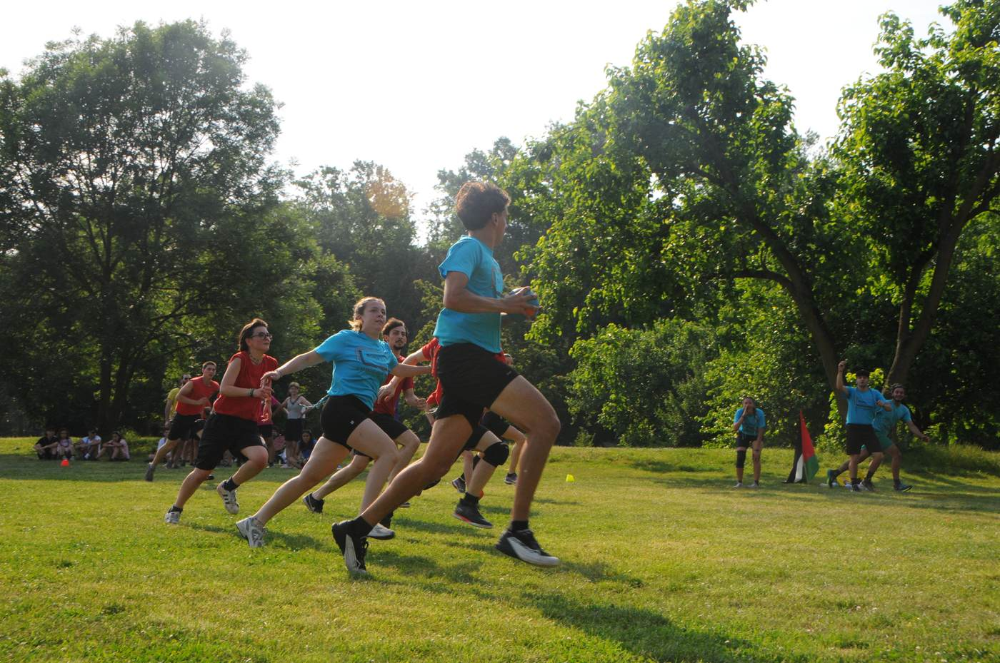

La categoria storica, dal 2009
La categoria E/G è quella che ha dato vita alla 24oredelleGrazie: reparti da tutta la zona si sfidano a pallascout per un'intera giornata e notte.
Le squadre E/G si affrontano in un girone che si sviluppa lungo tutte le 24 ore dell'evento, con partite sia diurne che notturne, fino alle fasi finali della domenica pomeriggio.
Il regolamento dettagliato — numero di giocatori per squadra, durata delle partite, criteri di classifica — è disponibile nella pagina Documenti.

Se il tuo reparto vuole partecipare alla prossima edizione nella categoria E/G, trovi tutte le informazioni sull'iscrizione nella pagina dedicata.